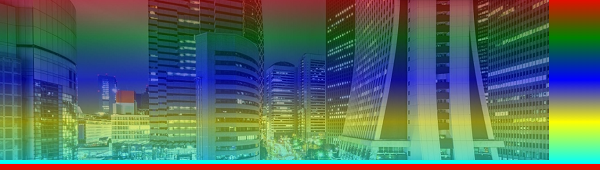
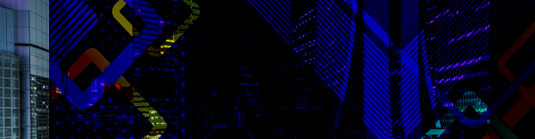
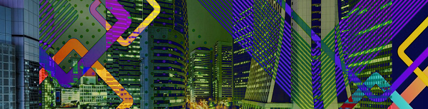
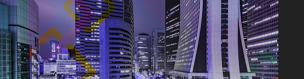

Filtros e Mesclagens
Filtros
A propriedade filter é utilizada para aplicar um filtro, como brilho, contraste, desfoque etc., a um elemento HTML. Nos exemplos a seguir utilizaremos uma imagem, mas vale ressaltar que os filtros podem ser aplicados a qualquer elemento.
Considere o seguinte HTML:
<img src="minhaImagem.jpg">
<style>
img { filter: blur(10px); }
</style>
Neste exemplo temos uma imagem e aplicamos a ela um estilo com um filtro blur que provoca um desfoque de 10px. O resultado é este:

Vejamos outros exemplos.
Brilho:
img { filter: brightness(200%); }
Contraste:
img { filter: contrast(150%); }
Sombra projetada:
img { filter: drop-shadow(0px 0px 15px white); }
Escala de cinza:
img { filter: grayscale(90%); }
Giro de matiz:
img { filter: hue-rotate(160deg); }
Inversão de cores:
img { filter: invert(1); }
Opacidade:
img { filter: opacity(50%); }

Saturação:
img { filter: saturate(10%); }
Sépia:
img { filter: sepia(1); }
A propriedade da qual falaremos agora é a propriedade backdrop-filter, ela é utilizada para aplicar filtros ao background de um elemento HTML. Vamos supor que temos um título configurado assim:
<h1>backdrop-filter</h1>
<img src="minhaImagem1.jpg">
<style>
h1 {
backdrop-filter: blur(10px);
padding: 50px;
position: absolute;
z-index: 1;
background-color: #FFF3;
}
</style>
A propriedade drop-filter aplica um desfoque ao background, o resultado é este:
Mesclagem
Existem duas formas de mesclar a aparência de elementos HTML, a primeira é por meio da opacidade, e a segunda é por meio de filtros de mesclagem que fazem um cálculo de cores. Quando mesclamos objetos com transparência o resultado é este:
A propriedade mix-blend-mode é utilizada para mesclar dois elementos sobrepostos sem utilizar transparência, se você fez o Curso Completo de Design Gráfico já deve estar acostumado com o conceito de mesclagem, senão, sugiro que confira. Vamos supor que temos duas imagens sobrepostas da seguinte maneira:
<img id="img1" src="minhaImagem1.jpg">
<img src="minhaImagem2.jpg">
<style>
#img1 {
position: absolute;
mix-blend-mode: color;
margin-left: 100px;
}
</style>
A propriedade position: absolute faz com que as imagens se sobreponham e a propriedade mix-blend-mode cria a mesclagem entre as duas imagens, o resultado é este:
Cor:
Note que detalhes nítidos das duas imagens podem ser percebidos. Vejamos outros exemplos.
Superexposição de cores:
#img1 { mix-blend-mode: color-burn; }

Subexposição de cores:
#img1 { mix-blend-mode: color-dodge; }
Escurecer:
#img1 { mix-blend-mode: darken; }

Diferença:
#img1 { mix-blend-mode: difference; }

Exclusão:
#img1 { mix-blend-mode: exclusion; }
Luz forte:
#img1 { mix-blend-mode: hard-light; }
Matiz:
#img1 { mix-blend-mode: hue; }

Clarear:
#img1 { mix-blend-mode: lighten; }

Luminosidade:
#img1 { mix-blend-mode: luminosity; }

Multiplicar:
#img1 { mix-blend-mode: multiply; }
Sobreposição:
#img1 { mix-blend-mode: overlay; }
Saturação:
#img1 { mix-blend-mode: saturation; }
Tela:
#img1 { mix-blend-mode: screen; }
Luz fraca:
#img1 { mix-blend-mode: soft-light; }